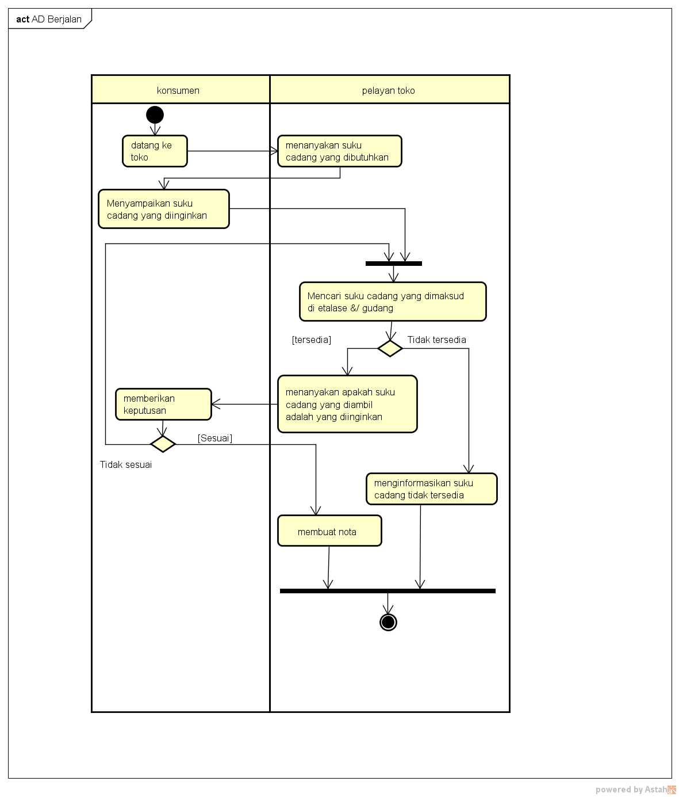

Nim : 1811500020
Nama : Winderi Ardianti
Kelompok : TI6A
Hasil saya menyadur pertemuan 2 :
- perhitungan nilai kehadiran cukup dengan menbuat file index.html disetiap direktori pertemuan di github(angka)
- perhitungan nilai tugas,dari kualitas konten file index.html tiap pertemuan
- pertemuan kali ini membahas Analisa sistem berjalan
- pada pertemuan kali ini juga mahasiswa akan menggambarkan activity diagram dari studi kasus
- menganalisa masalah pada studi kasus
- membahas juga analisis sistem berjalan
- membahas cara menggambarkan activity diagram menggunakan software astah
- saat pembelajaran mahasiswa boleh mencari tentang teori yang di jelaskan melalui internet
- semua proses pembuatan activity diagram harus di kerjakan oleh mahasiswa sesuai dengan instruksi pengajar
- file yang sudah di buat bisa disimpan dan kemudian di upload di github sebagai dokumen tambahan untuk nilai tugas pada konten saduran
hasil file project astah Download
